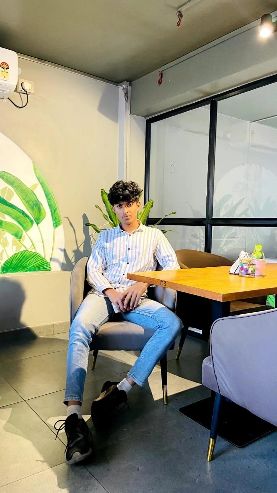

Summary
A dedicated and skilled professional with experience in web development, seeking to leverage technical expertise and creative problem-solving abilities to contribute to innovative projects.
Education
- Bachelor of Artificial Intilligence, University of SPPU, 2022-2025
- High School Diploma, AITRC,VITA, 2020-2022
Work Experience
- Web Developer, Tech Company Inc., 2022-Present
- Developed responsive websites using HTML, CSS, and JavaScript
- Collaborated with design teams to implement user-friendly interfaces
- Maintained and updated existing web applications
- Intern, Startup XYZ, 2021-2022
- Assisted in front-end development tasks
- Learned version control with Git
- Participated in code reviews and team meetings
Skills
- HTML5,CSS3,Bootstap
- JavaScript
- React
- Node js,Express Js
- MongoDB,MySQL
- Java,SpringBoot
- Responsive Web Design
- Git and GitHub
- Problem Solving,DSA
Awards and Certifications
- Certified Web Developer, Example Certification Board, 2023
- Completed Online Course in Advanced JavaScript, 2022
Other
Hobbies
Contact Details